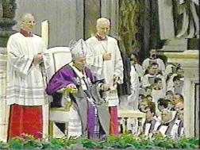
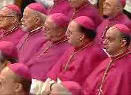
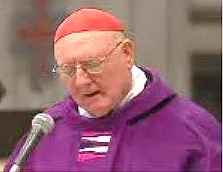

According to the
Catholic Encyclopedia online:
"The territory on the right bank of the Tiber between Monte Mario and Gianicolo (Janiculum) was known to antiquity as the Ager Vaticanus, and, owing to its marshy character, the low-lying portion of this district enjoyed an ill repute. The origin of the name Vaticanus is uncertain; some claim that the name comes from a vanished Etruscan town called Vaticum." [Ager in Latin means land]
However, according to a Vatican curator:
"The Vatican Hill takes it name from the Latin word Vaticanus, a vaticiniis ferendis, in allusion to the oracles, or Vaticinia, which were anciently delivered here."
Sources: Compendious Description of the Museums of Ancient Sculpture, Greek and Roman, in the Vatican Palace, by Cav. H. J. Massi, First Curator of the Vatican Museums and Galleries, Paleographer and Professor of the Italian and French Languages, Rome, Third Edition, 1889, Title page, page 7.
Compendious Description of the Museums of Ancient Sculpture, Greek and Roman, in the Vatican Palace, by Cav. H. J. Massi, First Curator of the Vatican Museums and Galleries, Paleographer and Professor of Languages, Rome, Sixth Edition, 1901, Title page, page 5.
Aulus Gellius, writing in the 2nd century, also said the word Vatican was derived from the word vaticinia, or prophecies, in his Attic Nights, book 16, chapter 17.
Source: The Attic Nights of Aulus Gellius, translated into English by the Rev. William Beloe, Volume III, London, 1795, Title page, page 247, page 248.
Research the word Vatican in many Latin - English / English - Latin dictionaries, or encyclopedias, and you will likely find that Vatican City and St. Peter's Basilica of the Roman Catholic Church were built upon what was called in Latin vaticanus mons or vaticanus collis. The words mons and collis mean hill or mountain. You will also find in the dictionaries that the words vatic / vates / vatis all relate to prophecy as shown here:
Source: The New College Latin and English Dictionary, revised and enlarged, by John C. Traupman, Ph.D., published and copyrighted by Bantam Books, 1995, ISBN 0-553-57301-2, page 437.
Note that there are five words listed above containing vatic, and all relate to prophecy. The word vatic and its association to prophecy can even be found in a standard English dictionary:
Source: Webster's II New Riverside Dictionary, Home and Office Edition, published in 1995 by Longmeadow Press, Copyright 1988 by Houghton Mifflin Company, ISBN 0-681-20227-0, page 458.
And here is what you would find in a Latin - English dictionary for the suffix -anus:
Source: The New College Latin and English Dictionary, revised and enlarged, by John C. Traupman, Ph.D., published and copyrighted by Bantam Books, 1995, ISBN 0-553-57301-2, page 60.
Vaticanus then is a combination of Vatic + anus, just as Romanus is a combination of Rome + anus. Therefore, vaticanus collis or vaticanus mons mean "the prophetic hill or mountain", which can be rephrased as the hill or mountain of prophecy. The word Vatican is just a shortened form of the word Vaticanus, just like Claudian is a shortened form of Claudianus, as shown above. This association of the Vatican with prophecy is even confirmed by this recent Catholic book:
Where does the word "Vatican" come from and what does it mean?
The word derives from the Latin vates, which means "tellers of the future." This name was the name given to a hillside on the west bank of the Tiber River in Rome because daily lineups of fortunetellers used to hawk their "wares" there to passersby on the street. In the fourteenth century, when the papacy was returned to Rome from Avignon (France), the present-day Vatican became the residence of the popes, and the word came to refer to the enclave in the middle of Rome that had become the seat of the Roman Catholic Church.
Source:
Here is a verse from the Latin Vulgate Bible and King James as an example of the use of vatic (emphasis is mine):
12 et intellexi quod Deus non misisset eum sed quasi vaticinans locutus esset ad me et Tobia et Sanaballat conduxissent eum
Neh 6:12 And, lo, I perceived that God had not sent him; but that he pronounced this prophecy against me: for Tobiah and Sanballat had hired him.
Now, note the following coins minted in Vatican City from 1955 to 1965 under three Popes. The inscription on the reverse side of the coin reads in Italian "CITTÁ DEL VATICANO", which as we can now see, means City of Prophecy.
| CITTÁ DEL VATICANO - CITY OF PROPHECY |
 Pope Pius the 12th - 1958 |
 Pope John the 23rd - 1959 |
 Pope Paul the 6th - 1963 |
To get a closer look at a coin, click on it.
Rev 17:18 And the woman which thou sawest is that great city, which reigneth over the kings of the earth.
There is also a woman on the reverse side, and at her feet is her title, FIDES, which means faith. This woman is symbolic of the Roman Catholic faith, or Roman Catholic Church.
| Here is a statue of a woman portraying the same
symbolism of the Catholic Church or Catholic faith that decorates the
monument to Pope Clement IX (1667-69), which was placed to the right
side of the nave entrance of the basilica Santa Maria Maggiore in Rome
in 1671.
Interestingly, the word anus in Latin also means "old woman", so Vaticanus is a combination two words that also result in The Old Woman of Prophecy, this woman being symbolic of the Catholic Church. |
|
|
From a photo by |
| It is important to note that in the symbolic
woman's hand, is a cup, as illustrated above on the coins, and just
barely visible with the statue above and at right. The depiction of the
Catholic faith (FIDES) as a woman holding a cup appears to be quite
common, and yet is apparently unique to the Catholic
Church.
There is a remarkable and direct correlation to these depictions of the Catholic faith as a woman, and the woman described in Revelation 17, as will be demonstrated. |
|
| Fides in stucco, Santa Maria Vallicella, Rome. |
A Woman In Prophecy Symbolizes A Church
In scripture a woman is used symbolically to depict the church, and the faithful church of saints is described as the bride of Christ:
2 Cor 11:2 For I am jealous over you with godly jealousy: for I have espoused you to one husband, that I may present you as a chaste virgin to Christ.
Rev 19:7 Let us be glad and rejoice, and give honour to him: for the marriage of the Lamb is come, and his wife hath made herself ready.
Rev 19:8 And to her was granted that she should be arrayed in fine linen, clean and white: for the fine linen is the righteousness of saints.And a godly woman's appearance is clearly described in scripture:
1 Tim 2:9 In like manner also, that women adorn themselves in modest apparel, with shamefacedness and sobriety; not with broided hair, or gold, or pearls, or costly array;
1 Tim 2:10 But (which becometh women professing godliness) with good works.1 Pet 3:3 Whose adorning let it not be that outward adorning of plaiting the hair, and of wearing of gold, or of putting on of apparel;
1 Pet 3:4 But let it be the hidden man of the heart, in that which is not corruptible, even the ornament of a meek and quiet spirit, which is in the sight of God of great price.
1 Pet 3:5 For after this manner in the old time the holy women also, who trusted in God, adorned themselves,Rev 12:1 And there appeared a great wonder in heaven; a woman clothed with the sun, and the moon under her feet, and upon her head a crown of twelve stars:
Rev 12:2 And she being with child cried, travailing in birth, and pained to be delivered.The symbol of the sun:
Mal 4:2 But unto you that fear my name shall the Sun of righteousness [Christ] arise with healing in his wings; and ye shall go forth, and grow up as calves of the stall.
Psa 119:172 My tongue shall speak of thy word: for all thy commandments are righteousness.
The symbol of the moon:
Psa 89:37 It shall be established for ever as the moon, and as a faithful witness [testimony] in heaven.
John 5:39 Search the scriptures; for in them ye think ye have eternal life: and they are they which testify of me.
The symbol of the stars:
Rev 1:20 The mystery of the seven stars which thou sawest in my right hand, and the seven golden candlesticks. The seven stars are the angels [messengers] of the seven churches: and the seven candlesticks which thou sawest are the seven churches.
Dan 12:3 And they that be wise shall shine as the brightness of the firmament; and they that turn many to righteousness as the stars for ever and ever.
So the woman of Revelation 12, the true church, is clothed with the righteousness of Christ, keeping the commandments of God, standing as a faithful witness upon the word of God, the scriptures, crowned with the gospel message of the 12 apostles, the new covenant representation of the twelve tribes of Israel.
Rev 12:17 And the dragon was wroth with the woman, and went to make war with the remnant of her seed, which keep the commandments of God, and have the testimony of Jesus Christ.
The Apostate Church
However, the woman described in Revelation 17 represents an apostate church, the direct opposite of the true and faithful church represented by the woman described in Revelation 12. While the Roman Catholic Church readily and willingly identifies itself as the woman of Revelation 12, the bride of Christ, it is precisely and graphically described in Revelation 17, as we shall see.
Rev 17:1 ... Come hither; I will show unto thee the judgment of the great whore that sitteth upon many waters:
Rev 17:2 With whom the kings of the earth have committed fornication, and the inhabitants of the earth have been made drunk with the wine of her fornication.
Church and State
| Rev 17:3 So he carried me away in the spirit into the wilderness: and I saw a woman sit upon a scarlet coloured beast, full of names of blasphemy, having seven heads and ten horns. |
The woman of Revelation 17 rides a symbolic beast. A beast in scripture is symbolic of an empire or state. Examples of this are explained in Daniel 7, where a lion represented Babylon, a bear represented Medo-Persia, and a leopard represented Greece. Therefore, the woman of Revelation 17 riding a beast is symbolic of the combining of the ecclesiastical power of church (the woman) and political power of the state (the beast), i.e., a church in control of state power.
Rev 17:18 And the woman which thou sawest is that great city, which reigneth over the kings of the earth.
The Vatican City is the seat of the Roman Catholic Church, and since the Lateran Concordat of 1929 it is also an independent country, the epitome of Church and State combined. The full formal diplomatic title in Italian is STATO DELLA CITTÁ DEL VATICANO, as shown on the coin below from the pontificate of Pope Pius the 12th, which means:
The City-State of Prophecy
Vatican 2 Lira coin minted in 1940A woman (church) dressed in scarlet and purple.
Here you see the Pope wearing scarlet and an Archbishop wearing reddish-purple. |
|
|
Photo by Arturo Mari. |
| Pope John Paul II celebrated mass in the Basilica of the Resurrection in Jerusalem on Sunday, March 26th 2000, dressed in a purple Lenten robe and a miter trimmed with scarlet red. For more photos, see this page at the Franciscan Cyberspot. |
On the12th of March 2000, during the Papal Apology Mass, the pope and other members of the Roman Catholic priesthood wore various shades of violet/purple because it also occurred during the Catholic festival of Lent, when the penitential color of purple is traditionally worn.
|
 |
|
|
|
 |
|
© 2000 by CTV |
|
| Cardinal Edward Cassidy, president of the Pontifical Council for Promoting Christian Unity, also participated in the unprecedented event at the Vatican, during which Pope John Paul II asked for forgiveness for the various persecution sins committed by Roman Catholics over the last two millennium. Cardinal Cassidy and other prominent Cardinals wore both prophesied colors of scarlet and purple! |
 |
|
© 2000 by CTV |
Below are photos from the October 31st, 1999 signing of the Joint Declaration on Justification by Faith between the Roman Catholic and Lutheran World Federation (LWF) Churches in Augsburg Germany. The Roman Catholics were boldly wearing the prophesied colors of scarlet and purple.
 |
Dressed in scarlet red is Cardinal Edward Cassidy, president of the Pontifical Council for Promoting Christian Unity. On the right wearing purple is Bishop Walter Kasper, secretary, Pontifical Council for Promoting Christian Unity. Seated on the left in black is Rev. Christian Krause, the Lutheran World Federation president. |
|
Image by Frank Imhoff, |
| In this photo of the audience at the ceremony in Augsburg, the Catholic cardinals are wearing scarlet red and the Catholic bishops are wearing purple. Cardinal Cassidy is in the center with Rev. Krause seated to his left (right in the photo). | |
|
Image by Frank Imhoff, |
|
|
|
Photo by Arturo Mari. |
A traditional "Red Mass" is also held for Supreme Court Justices in the United States, on the Sunday prior to the opening of the Supreme Court session. The Red Mass is an English tradition that was instituted about 1310 during the reign of King Edward II.
Red Mass - Ordinarily this relates to the color of the vestment used on the occasion of the Votive Mass in honor of the Holy Spirit, celebrated at the opening of councils, deliberative groups, schools, and such similar occasions when guidance is invoked. Frequently, at the beginning of a judicial year, such as a Mass is attended by judges and court officials for any civil court or legislative assembly with the intention that they might exercise equity and prudence while fulfilling their official capacities.
Source: Dictionary of the Liturgy, by Jovian P. Lang, OFM, copyright 1989 by Catholic Book Publishing Co., N.Y., ISBN 0-89942-273-X, page 541.
The Harlot Church's Missing Color
The garments of the high priest of Israel, according to the Bible, contained specific colors:
Exo 28:3 And thou shalt speak unto all that are wise hearted, whom I have filled with the spirit of wisdom, that they may make Aaron's garments to consecrate him, that he may minister unto me in the priest's office.
Exo 28:4 And these are the garments which they shall make; a breastplate, and an ephod, and a robe, and a broidered coat, a mitre, and a girdle: and they shall make holy garments for Aaron thy brother, and his sons, that he may minister unto me in the priest's office.
Exo 28:5 And they shall take gold, and blue, and purple, and scarlet, and fine linen.
Exo 28:6 And they shall make the ephod of gold, of blue, and of purple, of scarlet, and fine twined linen, with cunning work.
Exo 28:7 It shall have the two shoulder pieces thereof joined at the two edges thereof; and so it shall be joined together.
Exo 28:8 And the curious girdle of the ephod, which is upon it, shall be of the same, according to the work thereof; even of gold, of blue, and purple, and scarlet, and fine twined linen.Exo 28:31 And thou shalt make the robe of the ephod all of blue.
Exo 39:1 And of the blue, and purple, and scarlet, they made cloths of service, to do service in the holy place, and made the holy garments for Aaron; as the LORD commanded Moses.
Exo 39:2 And he made the ephod of gold, blue, and purple, and scarlet, and fine twined linen.In comparison, the garments of the high priest include the color blue, which is notably absent in the description of the woman of Revelation 17.:
Rev 17:4 And the woman was arrayed in purple and scarlet colour, and decked with gold and precious stones and pearls, having a golden cup in her hand full of abominations and filthiness of her fornication:
The Bible even tells us the spiritual meaning of the color blue:
Num 15:38 Speak unto the children of Israel, and bid them that they make them fringes in the borders of their garments throughout their generations, and that they put upon the fringe of the borders a ribband of blue:
Num 15:39 And it shall be unto you for a fringe, that ye may look upon it, and remember all the commandments of the LORD, and do them; and that ye seek not after your own heart and your own eyes, after which ye use to go a whoring:
Num 15:40 That ye may remember, and do all my commandments, and be holy unto your God.Deu 22:12 Thou shalt make thee fringes upon the four quarters of thy vesture, wherewith thou coverest thyself.
In Numbers 15, the context for the blue tassels or ribbands is intentional sinning (Num 15:30-31) and breaking the sabbath commandment (Num 15:32-36). Note that there is no mention of repentance by the man who was gathering sticks, he was breaking the sabbath intentionally in open defiance of the law. For that he was put to death.
This practice of blue in tassels survives today in the Jewish prayer shawl, known as a tallit. The tassel with the ribband of blue on the four corners of the tallit is called a tzitzit, and one is shown above.
All blue cloth was also specified to be used to cover the furniture and utensils of the sanctuary of Moses when it was disassembled for transport to a new location (Num 4:5-12).
Why blue? It is understood that the tablets of the Ten Commandments were cut from the clear blue sapphire seen on mount Sinai (Exo 24:10), which makes up the very throne of God (Eze 1:26, 10:1). So, the Ark of the Covenant in the most holy apartment of the sanctuary, the throne of God's presence (the Shekinah glory), contained the blue sapphire tablets of the Ten Commandments.
Healing in his Wings
Mal 4:2 But unto you that fear my name shall the Sun of righteousness arise with healing in his wings; and ye shall go forth, and grow up as calves of the stall.
Malachi 4:2 is a messianic prophecy, it is speaking of Jesus Christ. So what does healing in his wings mean? The word translated "wings" is H3671:
H3671. kanaph, kaw-nawf'; from H3670; an edge or extremity; spec. (of a bird or army) a wing, (of a garment or bed-clothing) a flap, (of the earth) a quarter, (of a building) a pinnacle:-- + bird, border, corner, end, feather [-ed], X flying, + (one an-) other, overspreading, X quarters, skirt, X sort, uttermost part, wing ([-ed]).
So Malachi was really saying that the Messiah would have healing in the edge or fringe of His garment. This was what was understood by the people of Israel. How do we know that?
Mat 14:35 And when the men of that place had knowledge of him [Jesus], they sent out into all that country round about, and brought unto him all that were diseased;
Mat 14:36 And besought him that they might only touch the hem of his garment: and as many as touched were made perfectly whole.Mat 9:20 And, behold, a woman, which was diseased with an issue of blood twelve years, came behind him, and touched the hem of his garment:
Mat 9:21 For she said within herself, If I may but touch his garment, I shall be whole.
Mat 9:22 But Jesus turned him about, and when he saw her, he said, Daughter, be of good comfort; thy faith hath made thee whole. And the woman was made whole from that hour.See also Mark 5:25-34 and Luke 8:43-48.
The fringe or tassel of Christ's garment undoubtedly included the sapphire blue ribband as directed in Numbers 15:38-39 as mentioned above, that symbolized the commandments of God. That is why the woman sought so earnestly to touch that hem or fringe. She knew Malachi's prophecy, and in faith she made her way through the crowd to claim that healing.
So regarding the whoring harlot church, though she claims to be God's representative on earth, the missing color blue in her description indicates that she defiantly disregards and transgresses the law of God. One of the characteristics of the antichrist power is lawlessness:
[NIV] 2 Th 2:3 Don't let anyone deceive you in any way, for that day will not come until the rebellion occurs and the man of lawlessness is revealed, the man doomed to destruction.
[NIV] 2 Th 2:7 For the secret power of lawlessness is already at work; but the one who now holds it back will continue to do so till he is taken out of the way.
And, note what the antichrist little horn power tries to change:
Dan 7:25 And he [little horn] shall speak great words against the most High, and shall wear out the saints of the most High, and think to change times and laws [of the most High]: and they shall be given into his hand until a time and times and the dividing of time.
The only one of the ten commandments of God that deals with time is the sabbath commandment (Exo. 20:8-11), which the Catholic Church claims to have changed, from Saturday the seventh day, to Sunday, the first day of the week:
2175 Sunday is expressly distinguished from the sabbath which it follows chronologically every week; for Christians its ceremonial observance replaces that of the sabbath.
Source:
SeeFor a striking contrast, note how the true church, symbolized by the woman of Revelation 12, is described:
Rev 12:17 And the dragon was wroth with the woman, and went to make war with the remnant of her seed, which keep the commandments of God, and have the testimony of Jesus Christ.
THE ULTIMATE FATE OF THE HARLOT DAUGHTER
Lev 21:9 And the daughter of any priest, if she profane herself by playing the whore, she profaneth her father: she shall be burnt with fire.
Rev 17:16 And the ten horns which thou sawest upon the beast, these shall hate the whore, and shall make her desolate and naked, and shall eat her flesh, and burn her with fire.
Blasphemy
The scriptures give us several examples of blasphemy:
Mark 2:5 When Jesus saw their faith, he said unto the sick of the palsy, Son, thy sins be forgiven thee.
Mark 2:6 But there were certain of the scribes sitting there, and reasoning in their hearts,
Mark 2:7 Why doth this man thus speak blasphemies? who can forgive sins but God only?John 10:32 Jesus answered them, Many good works have I showed you from my Father; for which of those works do ye stone me?
John 10:33 The Jews answered him, saying, For a good work we stone thee not; but for blasphemy; and because that thou, being a man, makest thyself God.Rev 2:9 I know thy works, and tribulation, and poverty, (but thou art rich) and I know the blasphemy of them which say they are Jews, and are not, but are the synagogue of Satan.
So, a man falsely claiming the power to forgive the sins of men, a man falsely claiming to be God on earth, and men falsely claiming to be the true church of God are all clearly defined as blasphemy. Note the following:
Priests and bishops are, as it were, the interpreters and heralds of God, commissioned in his name to teach mankind the" law of God, and the precepts of a Christian life—they are the representatives of God upon earth. Impossible, therefore, to conceive a more exalted dignity, or functions more sacred. Justly, therefore, are they called not only angels,' but gods.3 holding, as they do, the place and power and authority of God on earth. But the priesthood, at all times an elevated office, transcends in the New Law all others in dignity. The power of consecrating and offering the body and blood of our Lord and of remitting sin, with which the priesthood of the New Law is invested, is such as cannot be comprehended by the human mind, still less is it equalled by, or assimilated to, any thing on earth.Source: The Catechism of the Council of Trent (The Roman Catechism), Sacrament of Holy Orders,
.
Power of Consecrating
The third great power of the priestly office is the climax of all. It is the power of consecrating. "No act is greater," says saint Thomas, "than the consecration of the body of Christ." In this essential phase of the sacred ministry, the power of the priest is not surpassed by that of the bishop, the archbishop, the cardinal or the pope. Indeed it is equal to that of Jesus Christ. For in this role the priest speaks with the voice and the authority of God Himself.
When the priest pronounces the tremendous words of consecration, he reaches up into the heaven, brings Christ down from His throne, and places Him upon our altar to be offered up again as the victim for the sins of man. It is a power greater than that of monarchs and emperors. It is greater than that of saints and angels, greater than that of Seraphim and Cherubim. Indeed, it is greater than the power of the Virgin Mary. While the blessed virgin was the human agency by which Christ became incarnate a single time, the priest brings Christ down from heaven, and renders Him present on our altar as the eternal victim for the sins of man-not once, but, a thousand times! The priest speaks and lo! Christ the eternal and omnipotent God, bows His head in humble obedience to the priest's command.
[pg.271] Of what sublime dignity is the office of the Christian priest who is thus privileged to act as the ambassador and the vicegerent of Christ on earth. He continues the essential ministry of Christ - he teaches the faithful with the authority of Christ, he offers up again the same sacrifice of adoration and atonement which Christ offered on Calvary. No wonder that the name which spiritual writers are especially fond of applying to the priest is that of "alter Christus." For the priest is and should be another Christ.
Source: Faith of Millions, by Reverend John A. O'brien, Copyright 1938, published by Our Sunday Visitor, Huntington Indiana, page 270, 271.
Thus the priest may, in a certain manner, be called the creator of his Creator, ...
"The power of the priest," says St. Bernadine of Sienna, "is the power of the divine person; for the transubstantiation of the bread requires as much power as the creation of the world."
As the Word of God created heaven and earth, so, says St. Jerome, the words of the priest create Jesus Christ.
Source: The Dignity and Duties of the Priest or Selva, by St. Alphonsus de Liguori, translated from the Italian, edited by Eugene Grimm, copyright 1927 by Very Rev. James Barron, C.SS.R, pgs. 32, 33.
"In this moment, the priest quite literally becomes Christ Himself: his own personality is blotted out; it is absorbed in that of the everlasting priest who is, at one time, the offered victim and the supreme officiant."
Source: This is The Mass, Henri Daniel-Rops, Fulton J. Sheen, Yousuf Karsh, trans. with annotations by Alastair Guinan, New York: Hawthorn Books, Inc., 1965. First ed. 1958, p. 118. Nihil Obstat: Robert E. Hunt, S.T. D., Censor Librorum. Imprimatur: Thomas A. Boland, S.T.D. Archbishop of Newark.
Decked with Gold and Precious Stones and Pearls
At right is a jewel encrusted gold and silver triple-tiara of
Pope Pius IX, one of as many a dozen such tri-regno crowns in the
Vatican treasury. For more photos of papal tiaras, see |
 |
The Cup of Doctrinal Fornication
The Wine of Babylon is the Precept of Men
| Pope John Paul II, dressed in purple, holds a golden cup during the Papal Apology Mass on March 12th, 2000. Some Cardinals in attendance wore both prophetic colors of purple and scarlet (see above). |  |
| © 2000 by CTV |
Jer 51:6 Flee out of the midst of Babylon, and deliver every man his soul: be not cut off in her iniquity; for this is the time of the LORD'S vengeance; he will render unto her a recompense.
Jer 51:7 Babylon hath been a golden cup in the LORD'S hand, that made all the earth drunken: the nations have drunken of her wine; therefore the nations are mad.Isa 28:7 But they also have erred through wine, and through strong drink are out of the way; the priest and the prophet have erred through strong drink, they are swallowed up of wine, they are out of the way through strong drink; they err in vision, they stumble in judgment.
Isa 28:8 For all tables are full of vomit and filthiness, so that there is no place clean.
Isa 28:9 Whom shall he teach knowledge? and whom shall he make to understand doctrine?Isa 29:9 Stay yourselves, and wonder; cry ye out, and cry: they are drunken, but not with wine; they stagger, but not with strong drink.
Isa 29:10 For the LORD hath poured out upon you the spirit of deep sleep, and hath closed your eyes: the prophets and your rulers, the seers hath he covered.
Isa 29:11 And the vision of all is become unto you as the words of a book that is sealed, which men deliver to one that is learned, saying, Read this, I pray thee: and he saith, I cannot; for it is sealed:
Isa 29:12 And the book is delivered to him that is not learned, saying, Read this, I pray thee: and he saith, I am not learned.
Isa 29:13 Wherefore the Lord said, Forasmuch as this people draw near me with their mouth, and with their lips do honour me, but have removed their heart far from me, and their fear toward me is taught by the precept of men:
Isa 29:14 Therefore, behold, I will proceed to do a marvellous work among this people, even a marvellous work and a wonder: for the wisdom of their wise men shall perish, and the understanding of their prudent men shall be hid.Mat 15:8 This people draweth nigh unto me with their mouth, and honoureth me with their lips; but their heart is far from me.
Mat 15:9 But in vain they do worship me, teaching for doctrines the commandments of men.Rev 18:2 And he cried mightily with a strong voice, saying, Babylon the great is fallen, is fallen, and is become the habitation of devils, and the hold of every foul spirit, and a cage of every unclean and hateful bird.
Rev 18:3 For all nations have drunk of the wine of the wrath of her fornication, and the kings of the earth have committed fornication with her, and the merchants of the earth are waxed rich through the abundance of her delicacies.
Rev 18:4 And I heard another voice from heaven, saying, Come out of her, my people, that ye be not partakers of her sins, and that ye receive not of her plagues.
Rev 18:5 For her sins have reached unto heaven, and God hath remembered her iniquities.
Rev 18:6 Reward her even as she rewarded you, and double unto her double according to her works: in the cup which she hath filled fill to her double.The cup illustrated on the three Vatican coins at the top of this article, and in the hand of the other symbolic depictions of FIDES, is the golden cup of wine of the Mass. Above it is the host or wafer of the Eucharist, which resembles a sunburst.
Below are similar symbols of the Eucharist as seen on the 100 Lire coins:
 |
 |
|
From the video "666 and the
Mark" by James Arrabito, |
|
Above is a papal medal minted by Pius XI in 1929 to commemorate both the Lateran Treaty, which restored Papal sovereignty and made Vatican City an independent state, and the 50th jubilee of his priesthood. The sunburst wafer of the Eucharist appears in the sky above the Lateran and St. Peter's basilicas, over the cup of the Mass.
Here is a photo of the same symbology of the cup and wafer host of the Catholic mass, used in the window of the church
| At left is FIDES, the Catholic faith, holding the
golden cup of the Mass, portrayed by Lorenzo Sabbatini and his
assistants from 1573 -1576 on the vault of the First Sala dei Foconi,
the Vatican.
Rev 17:2 With whom the kings of the earth have committed fornication, and the inhabitants of the earth have been made drunk with the wine of her fornication. ... Rev 17:4 And the woman was arrayed in purple and scarlet colour, and decked with gold and precious stones and pearls, having a golden cup in her hand full of abominations and filthiness of her fornication: The golden cup of wine in the hand of the woman of Revelation 17 is full of abominations and the filthiness of her fornication, which represent apostate doctrine, stupefying corrupted dogma, the commandments (precepts) of men, imposed through coercion and persecution by civil powers (fornication), with which she has made all the nations to become drunken. |
|
|
From a photo by G. Vasari. |
|
The Catholic faith is again represented in these paintings as a woman holding a golden cup of wine with the round wafer of the Eucharist. |
|
| Ceiling panel
painting of FIDES by Francesco Podesti, Immaculate Conception room of the Borgia Tower, the Vatican. From a photo by Spectrum Colour Library. |
| Chief among the apostate Catholic doctrines is
that of transubstantiation, where the priest claims to turn bread and
wine into the actual body and blood of Jesus Christ, who is allegedly
re-presented at every mass as a continuing sacrifice, worshipped as
though it were God Himself, and then consumed by the congregation.
Eating the flesh of another human being is defined as cannibalism. In
truth, the Lord's supper is merely a symbolic memorial, and not
a sacrifice.
At left is a painting of FIDES, a detail from The Theological Virtues, painted from 1596 -1600 by Cherubino Alberti and Baldassare Croce, in the Sala Clementina, the Vatican. |
|
| From a photo by G. Vasari. |
| This oil on canvas of |
|
| From a photo by Pianeta Immagine. |
| At left is FIDES as portrayed over the pulpit of
the Benedictine |
|
| From a photo by Artephot, Paris (Nimatallah). |
| At right is a detail of FIDES from The Battle of Lepanto by Giorgio Vasari and assistants from 1572-73, in the Sala Regia, the Vatican. | |
| From a photo by M. Sarre. |
| This depiction of Fides by Donatello and Michelozzo dates to about 1435, and is carved on the base of the funeral monument of AntiPope John XXIII (1410-1415), which is in the Pietra serena Baptistry in Florence. |
| On the right is a tempera and oil on wood by Raphael, a part of the predella of the Baglioni Altarpiece, which dates to about 1507. | |
|
From a photo by M. Sarre. |
Above is a papal medal of Pope Clemens VIII marking the 13th year of his reign in 1602, and the reverse side is inscribed Unus Deus - Una Fides (One God - One Faith)
| This is the title page of a Roman Catholic
Missal, published in 1779, which depicts a cup-holding FIDES. The
Missal "contains the prayers said by the priest at the altar as well as
all that is officially read or sung in connection with the offering of
the holy Sacrifice of the Mass throughout the ecclesiastical year",
according to the Catholic
Encyclopedia.
Can it be any plainer that the Catholic Church has indeed adopted the symbology of a woman holding a golden cup, precisely as described, and in fulfillment of the prophecy of Revelation 17? Indeed, and it would seem that no other Christian denomination but the Catholic Church has depicted itself in this manner. |
This medal of Pope Innocent XI was struck in 1680, the 4th year of his reign. On the reverse side is FIDES representing the Catholic Church. Again she is holding the golden cup of the Mass and a cross. The inscription is from the Latin Vulgate Bible, Ecclesiasticus 40:12, and means fidelity shall stand for ever. INNOCENT XI
PONT - M - A - IIIIIN SAECVLVM STABIT
Papal Rome's symbolism of FIDES apparently originated with ancient Pagan Rome. On the left is a strikingly similar Roman Denarius, with FIDES holding military standards, a common theme on coins from ancient Rome, depicting a military faithful to the reigning emperor. IMP MAXIMINVS PIVS AVG
FIDES MILITVM
Additional images online
The
Here is another sculpture of FIDES, titled
In New Orleans, the
Note the statue of
In Venice,
In Rome, in the church of
Cup holding statue of
The earliest image of a cup-holding
See also
The "Mother" Church
The woman of Revelation 17 is the mother church, with apostate daughters:
Rev 17:5 And upon her forehead was a name written, MYSTERY, BABYLON THE GREAT, THE MOTHER OF HARLOTS AND ABOMINATIONS OF THE EARTH.
Only the Roman Catholic Church claims to be the "mother" Christian church:
The term Mother Church, however, as applied to Rome, has a special significance as indicating its headship of all churches.
Source: The Catholic Encyclopedia, copyright 1909, 1913, Volume 6, entry on Filial Church (daughter church), pg. 72.
And in this way the Church is increasingly a Mother, a Mother of many, many children: she becomes a Mother, ever more fully a Mother, a Mother who gives us faith, a Mother who gives us our identity. But Christian identity is not an identity card. Christian identity means being a member of the Church, since all these people belonged to the Church, to Mother Church, for apart from the Church it is not possible to find Jesus. The great Paul VI said: it is an absurd dichotomy to wish to live with Jesus but without the Church, to follow Jesus but without the Church, to love Jesus but without the Church (cf. Evangelii Nuntiandi, 16). And that Mother Church who gives us Jesus also gives us an identity which is not simply a rubber stamp: it is membership. Identity means membership, belonging. Belonging to the Church: this is beautiful! — Pope Francis' homily during Mass with the Cardinals present in Rome at the Pauline Chapel for the Feast of Saint George,
10. ... "It must always be clear, when the expression sister churches is used in this proper sense that the one, holy, catholic and apostolic universal church is not sister but mother of all the particular churches."
Source:
In the recent document Memory and Reconciliation, where the Roman Catholic Church discusses its asking forgiveness for its past sins of persecution, section 3.4 specifically addresses "The Motherhood of the Church":
The conviction that the Church can make herself responsible for the sin of her children by virtue of the solidarity that exists among them through time and space because of their incorporation into Christ and the work of the Holy Spirit, is expressed in a particularly effective way in the idea of “Mother Church” (“Mater Ecclesia”), ...
Source:
2. ... in every land where the Catholic religion flourishes the Roman Church, mother and mistress of all Churches, is duly reverenced, as it should be, with one mind and heart.
Source: EXEUNTE IAM ANNO, ENCYCLICAL OF POPE LEO XIII ON THE RIGHT ORDERING OF CHRISTIAN LIFE, Dec. 25th, 1888.
Furthermore, to check unbridled spirits, it [The Council of Trent] decrees that no one relying on his own judgment shall, in matters of faith and morals pertaining to the edification of Christian doctrine, distorting the Holy Scriptures in accordance with his own conceptions, presume to interpret them contrary to that sense which holy mother Church, to whom it belongs to judge of their true sense and interpretation, has held and holds, or even contrary to the unanimous teaching of the Fathers, even though such interpretations should never at any time be published. Those who act contrary to this shall be made known by the ordinaries and punished in accordance with the penalties prescribed by law.
Source: The Canons and Decrees of the Council of Trent, English Translation, by Rev. H. J. Schroeder, O.P., Copyright 1941 by B. Herder Book Co., Copyright 1978 by TAN Books and Publishers, Inc., Library of Congress Catalogue Number: 78-66132, ISBN 0-89555-074-1, pages 18-19.
Extract from Pope Gregory VII's Letter to the Bishop of Metz, 1081 Doeberl, op. cit. iii. 40 sqq. Mirbt, No. 297
The holy fathers, as well in general councils as in their writings and doings, have called the Holy Roman Church the universal mother, accepting and serving with great veneration this institution founded by the divine will, this pledge of a dispensation to the church, this privilege entrusted in the beginning and confirmed to St. Peter the chief of the apostles.
Source: Documents of the Christian Church, Second Edition, selected and Edited by Henry Bettenson, Copyright by Oxford University Press 1963, ISBN 0-19-501293-3, pages 105-106.
I acknowledge the holy Catholic and apostolic Roman Church as the mother and teacher of all churches; and to the Roman Pontiff, the successor of the blessed Peter, chief of the Apostles and vicar of Jesus Christ, I promise and swear true obedience.
Source: The Profession of Faith of the Council of Trent, from the Bull of Pius IV, "Iniunctum nobis," Nov. 13, 1565, Denzinger, Enchiridion Symbolorum, Thirtieth Edition, translated by Roy J. Deferrari in The Sources of Catholic Dogma, Copyright 1957 by B. Herder Book Co., pg. 303.
Mystery
This self-proclaimed "mother" church is also Mystery Babylon, the apostate church of Mysteries and the purveyor of Babylonian doctrinal confusion. Note this quote of John Paul II from the Vatican Information Service press release dated 17 September, 1997, (emphasis is mine):
Thanks to greater attention to the mystery of the Church and Mary's relationship with her, the Virgin has begun to be invoked more frequently as 'Mother of the Church.'
Mystery is also the term used by the Roman Catholic Church to refer to the Mass, specifically the transubstantiation of the bread and wine into the body and blood of Christ. It is a key part of Catholic dogma. These are the words of the priest in Latin or English (emphasis is mine):
HIC EST ENIM CALIX SANGUINIS MEI, NOVI ET AETERNI TESTAMENTI: MYSTERIUM FIDEI, QUI PRO VOBIS ET PRO MULTIS EFFUNDETUR IN REMISSIONEM PECCATORUM.
FOR THIS IS THE CHALICE OF MY BLOOD, OF THE NEW AND ETERNAL TESTAMENT, THE MYSTERY OF FAITH, WHICH FOR YOU AND FOR MANY SHALL BE SHED UNTO THE REMISSION OF SINS.
The Catholic is also well familiar with many "mysteries" through the recitation of their Hail Marys and the rosary. There are 15 decades of prayer (150 recitations) and during each decade of ten recitations, the Catholic contemplates on one of the "mysteries" of the church, which are as follows:
The Fifteen Mysteries of the
- The 5 Joyful Mysteries
- The Mystery of the Annunciation
- The Mystery of the Visitation
- The Mystery of the Birth of the Lord
- The Mystery of the Presentation in the Temple
- The Mystery of Finding Jesus in the Temple
- The 5 Sorrowful Mysteries
- The Mystery of the Agony in the Garden
- The Mystery of the Scourging at the Pillar
- The Mystery of the Crowning with Thorns
- The Mystery of Jesus carrying his cross
- The Mystery of the Crucifixion
- The 5 Glorious Mysteries
- The Mystery of the Resurrection
- The Mystery of the Ascension of Our Lord
- The Mystery of the Descent of the Holy Spirit
- The Mystery of the Assumption of the Blessed Virgin
- The Mystery of the Coronation of the Blessed Virgin as Queen of Heaven
The Persecuting Church Drunken on Blood
The woman of Revelation 17 is drunk with the blood of Christian martyrs:
Rev 17:6 And I saw the woman drunken with the blood of the saints, and with the blood of the martyrs of Jesus: and when I saw her, I wondered with great admiration.
AFRAID WE WILL GET THEM.
No one is more honest with Protestants than we are, for no one knows them better. There is a great deal of controversy now going on as to the attitude of Protestants towards Catholics holding political office. We have published statements from Baptist and Lutheran bodies, and individual declarations from prominent men in all the Protestant sects. They are all agreed on the question. They would not vote for a Catholic for political office, least of all for the presidency of the United States; and they all give the same or similar reasons. Some say it is because Catholics owe their allegiance to the Pope, and therefore they cannot vote for them. Others declare that all Catholics believe in the union of Church and State; and they under no circumstances would vote to give them political power. Others give other reasons; but one and all declare that they would not vote for Catholics, and mostly all for the two reasons given above.
But is there not a reason behind these two reasons which these Protestants are not willing to admit even to themselves? Are not these two reasons too theoretical and entirely too academic for the majority of Protestants? They know very little of the meaning and import of allegiance, civil or ecclesiastic; and they do not know what Catholics understand by the term. They have a very vague and indistinct notion of the union of Church and State, and are not aware that such union exists more or less in every state in Christendom. What they really oppose and what they wish to emphasize by their vote is that they do want want to be dragooned into the Catholic Church. They fear that if the Catholic Church should get the upper hand in this country she might induce the state to suppress all heretical worship and compel all to embrace the Catholic faith. And this fear is not irrational, if unfounded. The Church has persecuted. Only a tyro in church history will deny that. The Apologists in the days of Roman imperial domination inveighed against persecution and with Tertullian deplored that "it was no part of religion to persecute religion." But after the days of Constantine and under the reign of that first Christian emperor the attitude of Christians underwent a change, and persecution of pagans took place in many places in the empire. A hundred and fifty years after Constantine the Donatists were persecuted and sometimes put to death. Against this extreme measure St. Augustine raised his voice; but he was willing that they should despoiled of their churches and of their goods. Protestants were persecuted in France and and Spain with the full approval of the Church authorities. We have always defended the superventions of the Huguenots and the Spanish Inquisition. Wherever and whenever there is honest Catholicity there will be a clear distinction drawn between truth and error, and Catholicity and all forms of heresy. When she thinks it good to use physical force the Church will use it. She is no better nor holier than God; and God has used physical force to bring people to embrace the truth. If the Church ever again finds herself in the same circumstances as surrounded her in the days of the Donatists and Huguenots and the Moriscoes it is very probable that she will defend herself with the same weapons she used before. But will those conditions ever return? We hope not for the sake of both persecutor and persecuted. The Protestants of the world fear that the history of persecution will repeat itself. If so it will be brought about by themselves. They fear that they will be forced to embrace the Catholic faith. They never will be as long as they allow Catholics to profess their religion in peace. But if they want war they will be promptly accommodated.
But will the Catholic Church give bond that she will not persecute at all? Will she guarantee absolute freedom and equality of all churches and all faiths? The Catholic Church gives no bonds for her good behavior. She has made mistakes in her policy which she promptly corrected as soon as discovered. She has countenanced violence when more human measures would have been of more avail. Her children and her clergy have often been carried away by popular passion. But she gives no bonds that such things shall not occur again.
Why should the Church be required to furnish security of good behavior? Civil governments have been tyrannical. But we must have civil government. The state has oppressed, and kings have abused their power. But we must have the state to maintain order and protect life and property. So it is with the Church; only more so. We must have the Church. She is the means of grace to a lost world. She is salvation to all mankind. Without the state we have anarchy; without the Church we have spiritual chaos. ― Western Watchman, A Catholic Journal Devoted To The Catholic Interests In The West, Vol. XXXXIII ― No. 35, St. Louis, Mo. Dec. 24, 1908, Forty Second Year, pg. 8.A harlot drunken on blood:
Soul of Christ, sanctify me.
Body of Christ, save me.
Blood of Christ, inebriate me.
Water from the side of Christ, wash me.
...
From the prayerThe prayer Anima Christi can be found on scores of Catholic web sites, and actually asks for drunkenness from the blood of the golden cup.
That the Roman Catholic church felt compelled to ask for forgiveness for her persecution sins of the past on March 12th, 2000, only serves to further confirm she is the apostate persecuting mother church responsible for the blood of the saints spoken of in Revelation!
The Beast That Was, and Is Not, and Yet Is.
Rev 17:7 And the angel said unto me, Wherefore didst thou marvel? I will tell thee the mystery of the woman, and of the beast that carrieth her, which hath the seven heads and ten horns.
Rev 17:8 The beast that thou sawest was, and is not; and shall ascend out of the bottomless pit, and go into perdition: and they that dwell on the earth shall wonder, whose names were not written in the book of life from the foundation of the world, when they behold the beast that was, and is not, and yet is.The angel explains to John that there are three phases to the beast:
| The Beast that Was | Is Not | And Yet Is |
| Papal sovereignty and persecution 1260 years (538-1798) |
Papal sovereignty lost (1798-1929) |
Papal sovereignty restored (1929 - ?) |
- For 1260 years the papacy ruled over Europe, from 538 to 1798. During these dark ages the papacy exercised both political and ecclesiastical power, the woman rode the beast, the beast that was.
- The papacy lost its political power February 15th, 1798, with the capture of Pius VI by the armies of Napoleon, and it lost the last of the Papal States, on September 20th, 1870 when Italian troops seized the city of Rome, leaving the Pope a virtual prisoner in the Vatican. The Catholic Church had lost her political power and sovereignty, consequently the beast was not.
- Now, John in chapter 17, sees the harlot in her final phase after she has regained her lost political power (sit on the beast), and the world wonders at her revival. Papal sovereignty was restored February 11th, 1929 with the signing of the Lateran Treaty with Benito Mussolini. And yet the beast is. It has ascended back out of extinction, or the bottomless pit, and proceeds from there to its destruction.
The City of Seven Mountains
The woman of Revelation 17 sits on seven mountains:
Rev 17:9 And here is the mind which hath wisdom. The seven heads are seven mountains, on which the woman sitteth.
Now, some Roman Catholic apologists will likely try to apply this passage to the city of Jerusalem. However, this verse tells us that the woman of Revelation 17, an apostate persecuting Christian church, sits, or headquarters itself, in a city of seven mountains. No such Christian church has its administrative headquarters in Jerusalem, so it can be easily dismissed as a possibility. It is also worth noting that Revelation was written by John about 95 A.D., some 25 years after Jerusalem had been besieged and completely destroyed by the Romans. This also removes it from consideration in the prophecy, since the Jews did not return to Jerusalem until the 20th century.
John the Revelator further amplifies and defines the harlot as follows:
Rev 17:18 And the woman which thou sawest is that great city, which reigneth over the kings of the earth.
So we need to look for an apostate persecuting Christian church, that attempts to rule over the kings of the earth from a great city, known for having seven mountains. So let's consider the great Eternal City of Rome, headquarters of the Roman Catholic Church. Look in most any encyclopedia and you will find that Rome is known as the city of seven hills, or seven mountains. These seven mountains are the Capitoline, Quirinal, Viminal, Esquiline, Cælian (Coelian/Celio), Aventine and Palatine, highlighted in yellow below.
Marcus Terentius Varro (116 BC – 27 BC) in De Lingua Latina v. 41 wrote:
"Ubi nunc est Roma, erat olim Septimontium, nominatum ab tot montibus, quos postea urbs muris comprehendit."
"Where now is Rome, was once Septimontium, named by the so many mountains, afterwards enclosed by the city walls."Below is a an ancient Roman coin (a Sestertius) in the collection of the British Museum, minted at Tarraco in 71 A.D. during the reign of Vespasian (69-79 A.D.), declaring him to be the Pontifex Maximus (a title assumed by the papacy), which depicts the city of Rome as both the goddess Dea-Roma seated on 7 hills, and a she-wolf suckling Romulus and Remus (just above the R in ROMA).
|
|
|
Obverse Inscription:
IMPERATOR CAESAR VESPASIANVS |
|
Above photo from The
Prophetic Faith of Our Fathers |
See also:
The Catholic Encyclopedia
It is within the city of Rome, called the city of seven hills, that the entire area of Vatican State proper is now confined. By treaty with the Italian Government certain other properties apart from the Vatican State are considered as territorial parts of the state of Vatican City. Since the founding of the Church there by St. Peter, the city of Rome has been the center of Christendom. The city itself is the diocese of the pope as bishop of Rome.
Source: The Catholic Encyclopedia, edited by Robert C. Broderick, Imprimatur of the Most Reverend William E. Cousins, Archbishop of Milwaukee, Nihil Obstat of the Reverend Richard J. Sklba, published by Thomas Nelson Publishers, copyright 1976, entry on Rome, pg. 529.
Catholic Attempts at Rebuttal
The Roman Catholic apologist will likely respond in a manner similar to this, from Patrick Madrid:
|
It is extremely interesting, to say the least, to see a Roman Catholic apologist, whose church is governed by the Bishop of Rome, trying to extricate his church from that city. Rome, like many European cities, has fortified city walls around its perimeter. The original walls of the city of the Caesars, built between 272 and 279 by Aurelian, did not include the area of the Vatican hill on the west bank of the Tiber, so it is true, as Patrick Madrid says, that Vatican hill was likely considered outside the city limits of the pagan Rome of the Caesars. However, after the sacking of St. Peter's Basilica and Rome by the Muslim Saracens in 846, the city walls were enlarged as a defensive measure by
"Between 848 and 852 Leo IV surrounded the whole [Vatican] settlement with a wall, which included it within the city boundaries. Until the pontificate of Sixtus V [1585-1590] this section of Rome remained a private papal possession and was entrusted to a special administration. Sixtus, however, placed it under the jurisdiction of the urban authorities as the fourteenth region."
Source:
Under ecclesiastical papal Rome, the Vatican has been considered within the walls and city limits of Rome since the middle of the 9th century. So as can be seen, Patrick Madrid in his book Pope Fiction is not telling the whole story to his readers. He is leaving out pertinent facts, since the Vatican has been within the city limits and walls of Rome for well over 1000 years.
Rev 17:9 And here is the mind which hath wisdom. The seven heads are seven mountains, on which the woman sitteth. ...
Rev 17:18 And the woman which thou sawest is that great city, which reigneth over the kings of the earth.That the papacy of the Roman Catholic Church, the Bishop of Rome, attempts to rule the world from Rome (fulfilling the prophecy) is so obvious on the face of it that it hardly seems to call for any documentation, but we will let a recent pope be heard on this issue:
67. ... the hand of God, who guides the course of history, has set down the Chair of His Vicar on earth, in this city of Rome which, from being the capital of the wonderful Roman Empire, was made by Him the capital of the whole world, because He made it the seat of a sovereignty which, since it extends beyond the confines of nations and states, embraces within itself all the peoples of the whole world. The very origin and divine nature of this sovereignty demands, the inviolable rights of conscience of millions of the faithful of the whole world demand that this sacred sovereignty must not be, neither must it ever appear to be, subject to any human authority or law whatsoever, even though that law be one which proclaims certain guaranties for the liberty of the Roman Pontiff.
Source: Pope Pius XI, Encyclical Letter
Note the remarkable wording used by Pius XI. He boldly claims sovereignty over all the people of the world from his "seat" in the city of Rome! To use a well worn Catholic phrase, "Roma Locuta Est, Causa Finita Est" - Rome has spoken, the case is closed. We will continue to develop the extensive evidence, however.
The Lateran Basilica: The Cathedral of the Bishop of Rome
Luke 4:6-7 (KJV): 6 And the devil said unto him, All this power will I give thee, and the glory of them: for that is delivered unto me; and to whomsoever I will I give it. 7 If thou therefore wilt worship me, all shall be thine.
Rev 13:2 (KJV): ... and the dragon [the Devil / Satan (Rev 12:9) thru pagan Rome] gave him (papal Rome) his power, and his seat (cathedra), and great authority.
A few minutes of researching in most any library will reveal that the official "cathedra" or seat of authority for the Bishop of Rome, the Pope, is not in St. Peter's Basilica, but it is actually in the apse of St. John Lateran Cathedral, which is a short distance to the southeast of the Coliseum and Roman Forum, on the opposite side of Rome from St. Peter's. Located on the Coelian (Celio/Cælian) Hill, one of the seven hills of Rome (Rev 17:9), St. John Lateran dates back to Rome's emperor Constantine, who donated the building to the Bishop of Rome in the 4th century. It is the oldest church in Christendom and so lays claim to the title of the "mother church of the world".
The Catholic Encyclopedia
Cathedra
The chair-throne of a bishop is always located in the sanctuary against the left wall on the gospel side in the cathedral church of the diocese. Cathedra is the Greek word for a chair or throne, from which is derived the word cathedral.Lateran Church
Officially, the Church of our Most Holy Savior, called St. John Lateran, is the Cathedral of the bishop of Rome, the pope. It is considered the mother church of the Christian world. The basilica, part of a donation of the Laterani family, was presented to the Church in 311. It is the oldest of the Christian basilicas and from historic times was known as Constantine's basilica.Source: The Catholic Encyclopedia, edited by Robert C. Broderick, Imprimatur of the Most Reverend William E. Cousins, Archbishop of Milwaukee, Nihil Obstat of the Reverend Richard J. Sklba, published by Thomas Nelson Publishers, copyright 1976, pages 98, 340.
St. John Lateran Cathedral
Mother Church and Official Seat of the Bishop of Rome
Constantine must have given it [the Lateran] to the Church in the time of Miltiades, not later than about 311, for we find council against the Donatists meeting within its walls as early as 313. From that time onwards it was always the centre of Christian life within the city; the residence of the popes and the cathedral of Rome. The latter distinction it still holds, though it has long lost the former.
Source: 1913 Catholic Encyclopedia, article on
A statue of the woman (fides) holding a cup (Rev 17:4) on top of St. John Lateran
Pope Pius XI, Bishop of Rome, enthroned on his cathedra in the Lateran apse.
Pope Benedict XVI, formally took possession of St. John Lateran and enthroned himself on his cathedra of power and authority for the first time on May 7th, 2005. His homily discussed the significance of the event. Pope Francis took possession of the Bishop of Rome's cathedra on April 7, 2013.
Since 1377, upon the return to Rome from Avignon, Church administration has been located in the Vatican, rather than the Lateran. However, as the cathedra (official seat) of the Bishop of Rome, the Pope, the Lateran is today still considered to be extraterritorially a part of the Vatican City-State, as is the basilica Santa Maria Maggiore (St. Mary Major), which is located on Esquiline Hill. This is the result of a treaty (Concordat) signed with the Italian state in 1929 at the Lateran, which restored the diplomatic status of the Vatican as an independent city-state, which had been lost in 1860-1870 when Italy seized all papal territories. See
Vatican State, City of
The capital city of the Vatican State, which includes the principle territory of the surrounding city of Rome, was recognized as sovereign land of the Roman Catholic Church by the Lateran Treaty. It includes the Vatican palace, its gardens, the basilica and piazza of St. Peter's, and other official buildings on a plot of land about one square mile with approximately 1000 residents, all of whom are citizens. It is properly called the papal state and is governed by the Pope as the sovereign ruler with executive, legislative and judicial powers exercised through commissions or delegated groups. There are other properties fixed by the treaty not adjoining Vatican State yet under its sovereign dominion. These are the basilicas and buildings of St. John Lateran [Coelian hill], St. Mary Major [Esquiline hill], St. Paul-outside-the-Walls [~2 km South of Rome], and the Holy Apostles [Quirinal hill], and the churches of Saint Andrea-della-Valle [NE of Campo De' Fiore] and San Carlo-ai-Catinari [SE of Campo De' Fiore] with their adjoining buildings, the palace of San Callisto [Palazzo S. Callisto, Trastevere] and the papal summer residence, Castel Gandolfo [Alban Hills, ~20 km SE of Rome].Source: The Catholic Encyclopedia, edited by Robert C. Broderick, Imprimatur of the Most Reverend William E. Cousins, Archbishop of Milwaukee, Nihil Obstat of the Reverend Richard J. Sklba, published by Thomas Nelson Publishers, copyright 1976, page 598.
Also seized in 1870 by Italy but not returned by the Lateran treaty, was the grand Quirinal papal palace built on Quirinal hill (the highest of the 7 hills of Rome) beginning in 1574. It was the official residence for some 30 Popes until its seizure by Italy, when the Palazzo del Quirinale became the official residence of the kings of Italy, and since 1947 the residence of the presidents of Italy.
So even today, official Vatican territorial sovereignty extends across the Tiber into various parts of the city of Rome. It can even be said that the Vatican literally straddles, or sits over the seven-hilled city of Rome (Rev 17:9)! In fact, the term Holy See, which refers to the universal jurisdiction of the Bishop of Rome, is derived from the Latin Sancta Sedes, which means Holy Chair. Synonymous terms are Apostolic See, Roman Church, or Roman Curia.
More Catholic Attempts at Rebuttal
Note what a Catholic "expert" at EWTN has said on this subject, to refute Protestant claims that the Catholic Church is described in the book of Revelation:
|
|
... "The seven heads represent seven hills on which the woman sits." First of all, no Pope has ever lived or had his "seat" (cathedra or cathedral) on any of the seven hills of Rome. These hills are small hillocks (Capitoline, Palatine, Esquiline, Aventine and three lesser "bumps" in central Rome) where the religion and government of pagan Rome was situated. The Catholic Church's headquarters at the Lateran (the cathedral) and at the Vatican (where the Pope lives) does not coincide with them." ... |
|
Quoted from Whore
of Babylon by Colin B. Donovan, STL, |
|
Mr. Donovan needs to investigate one of those lesser bumps (the Cælian), and St. John Lateran Cathedral a bit more closely. I dare say that most any encyclopedia's articles and maps on Rome and the Lateran will reveal the error of his statement. With that kind of "expert" answer on a prominent Catholic web site, it is no wonder that most Catholics don't know the truth on this subject. But the truth is available even on EWTN's own site:
| CHURCHES OF ROME: CHRISTIANITY'S FIRST CATHEDRAL June Hager |
|
|
|
See this current
Now back to Patrick Madrid's book Pope Fiction, which makes this attempt at rebuttal on this point:
|
I am not desperate, and don't feel the need to try and salvage anything. I am quite confident and willing let the reader judge the weight of the facts presented in this article, and who gets the "A", and who fails completely in their arguments which are composed of half truths and misinformation.
As mentioned above, St. John Lateran, the cathedra (seat of authority) of the Bishop of Rome, the Pope, has been formally recognized by the 1929 treaty with Italy to be extra territorially a part of the Vatican City-State. Consequently, the Pope officially reigns from St. John Lateran, which is on one of the famous seven hills of Rome, the Cælian, and it is also a part of the Vatican City-State.
From a City to a Religion
Mat 23:37 O Jerusalem, Jerusalem, thou that killest the prophets, and stonest them which are sent unto thee, how often would I have gathered thy children together, even as a hen gathereth her chickens under her wings, and ye would not!
Can a city represent a religion? How difficult is it to see that the city of Jerusalem did not literally kill the prophets of God? As the city of old Jerusalem was used to symbolize Judaism, the New Jerusalem is used symbolically to represent the faithful saints of God:
Rev 21:2 And I John saw the holy city, new Jerusalem, coming down from God out of heaven, prepared as a bride adorned for her husband.
In opposition to the New Jerusalem, the eternal city of the saints, scripture describes a great city of seven hills, Rome. Rome is also symbolically called Babylon in prophecy, representing apostate religion:
Roman Catholics Admit
Babylon Is A New Testament Symbol For Rome1 Pet 5:13 The church that is at Babylon, elected together with you, saluteth you; and so doth Marcus my son.
Babylon in the above verse is widely recognized as a code word meaning Rome, not Babylon, since there is no evidence that Peter ever ministered in Babylon. Roman Catholics have even acknowledged this association:
"Babylon," from which Peter addresses his first Epistle, is understood by learned annotators, Protestant and Catholic, to refer to Rome - the word Babylon being symbolic of the corruption then prevailing in the city of the Caesars.
Source:
"But the Bible never says Peter was in Rome."
But the Bible does. While there were many things that happened connected with Jesus and the Apostles that are not written in the Bible (see Jn 21:25), Peter's presence in Rome is confirmed by it. In his first epistle Peter closes by saying "She who is at Babylon, who is likewise chosen, sends you greetings; so does my son Mark" (5:13). "She who is chosen" refers to the Church in Rome. "Babylon is a Christian code word for Rome and the Roman Empire. Examine Revelation 17:5 where the author uses Babylon — mother of harlots and the earth's abomination, drunk on the blood of Christian martyrs — in this sense. At the time Peter was writing, Babylon was no longer a great city but a deserted relic of mud huts.
Source:
But Boettner is wrong when he claims "there is no allusion to Rome in either of [Peter's] epistles". There is, in the greeting at the end of the first epistle. "The church here in Babylon, united with you by God's election, sends you her greeting, and so does my son, Mark." (1 Peter 5:13). Babylon is a code word for Rome. It is used that way six times in the last book of the Bible ... Eusebius Pamphilius, writing about 303, noted that "it is said that Peter's first epistle, in which he makes mention of Mark, was composed at Rome itself; and he himself indicates this, referring to the city figuratively as Babylon." [Historia ecclesiastica 2, 15, 4.]
Source:
So anxious are the Catholics to place Peter in Rome, that they are willing to permanently brand Rome with the symbolic title of Babylon in the New Testament. Indeed, I would venture to say that every Roman Catholic Bible published has a footnote identifying Babylon in 1 Peter 5:13 as actually meaning Rome. Regarding references to Babylon in Revelation 14:8, 16:19, 17:5, 18:2, 10, and 21; note the following:
"These references cannot be to the onetime capital of the Babylonian Empire. That Babylon had been reduced to an inconsequential status by the march of years, military defeat, and political subjugation; it was no longer a 'great city'. It played no important part in the recent history of the ancient world. The only truly 'great city' in New Testament times was Rome."
Source:
The city of seven hills, Rome, symbolically called Babylon in the New Testament, is where a harlot woman (apostate Christian church) rules (sits) over many people.
The Universal Church.
The woman of Revelation 17 sits on many waters, representing authority over many people:
Rev 17:15 And he saith unto me, The waters which thou sawest, where the whore sitteth, are peoples, and multitudes, and nations, and tongues.
The word Catholic means Universal. So the Roman Catholic Church is claiming to be the Universal or Worldwide Christian Church, a claim of authority over all the Christians of the world.
The significance of Rome lies primarily in the fact that it is the city of the pope. The Bishop of Rome, as the successor of St. Peter, is the Vicar of Christ on earth and the visible head of the Catholic Church. Rome is consequently the centre of unity in belief, the source of ecclesiastical jurisdiction and the seat of the supreme authority which can bind by its enactments the faithful throughout the world.
Source:
The above papal medal of Pius XII, minted in the 11th year of his reign, symbolizes the Catholic church as a queen, pompously seated on her throne, from which she claims to uphold truth and justice. This depiction bears a remarkable resemblance to the following verse describing Mystery Babylon:
Rev 18:7 How much she hath glorified herself, and lived deliciously, so much torment and sorrow give her: for she saith in her heart, I sit a queen, and am no widow, and shall see no sorrow.
Reigning Over the Kings of the Earth.
The woman of Revelation 17 claims authority over all the kings of the earth:
Rev 17:18 And the woman which thou sawest is that great city, which reigneth over the kings of the earth.
The Pontiff of the Roman Catholic Church historically claims authority over all secular rulers, and has exercised that assumed authority by deposing kings or queens who did not acknowledge the Pope's superior secular and ecclesiastical authority.
Here are just a few examples of this claimed authority over Kings:
There are two powers, august Emperor, by which this world is chiefly ruled, namely, the sacred authority of the priests and the royal power. Of these that of the priests is the more weighty, since they have to render an account for even the kings of men in the divine judgment. You are also aware, dear son, that while you are permitted honorably to rule over human kind, yet in things divine you bow your head humbly before the leaders of the clergy and await from their hands the means of your salvation. In the reception and proper disposition of the heavenly mysteries you recognize that you should be subordinate rather than superior to the religious order, and that in these matters you depend on their judgment rather than wish to force them to follow your will.
From Pope Gregory VII, Dictatus Papae, 1090 A.D.
9. That of the pope alone all princes shall kiss the feet.
12. That it may be permitted to him to depose emperors.
1. ... the Roman Pontiff, who rules the offices of God and our Lord Jesus Christ on earth and who holds the fullness of power over kingdoms and kings, and who judges all, and by no one at this time is judged, ...
Pope Innocent III on Empire and Papacy
'The Moon and the Sun' Sicut universitatis conditor.
Ep. i, 401, October 1198 P.L. ccxiv. 337. Mirbt, no. 326The creator of the universe set up two great luminaries in the firmament of heaven; the greater light to rule the day, the lesser light to rule the night. In the same way for the firmament of the universal Church, which is spoken of as heaven, he appointed two great dignities; the greater to bear rule over souls (these being, as it were, days), the lesser to bear rule over bodies (those being, as it were, nights). These dignities are the pontifical authority and the royal power. Furthermore, the moon derives her light from the sun, and is in truth inferior to the sun in both size and quality, in position as well as effect. In the same way the royal power derives its dignity from the pontifical authority: and the more closely it cleaves to the sphere of that authority the less is the light with which it is adorned; the further it is removed, the more it increases in splendor.
THE POPE AND IMPERIAL ELECTIONS
The Statement of the Papal Claim by Innocent IIIDecretal Venerabilem, March 1202, Corpus Iuris Canonici, (Friedberg) II. 80. Mirbt, 323
[A letter from Innocent to the Duke of Zähringen justifying his intervention in a disputed election of the kingship of the Romans.]
... We acknowledge, as we are bound, that the right and authority to elect a king (later to be elevated to the Imperial throne) belongs to those princes to whom it is known to belong by right and ancient custom; especially at this right and authority came to them from the Apostolic See, which transferred the Empire from the Greeks to the Germans in the person of Charles the Great. But the princes should recognize, and assuredly do recognize, that the right and authority to examine the person so elected king (to be elevated to the Empire) belongs to us who anoint, consecrate and crown him. For it is a generally observed rule that the examination of a person belongs to him who has the duty of the laying-on of hands. For suppose that the princes elected a sacrilegious man or an excommunicate, a tyrant or an imbecile, a heretic or a pagan; and that not just by a majority, but unanimously, are we bound to anoint, consecrate and crown such a person? Of course not....
And it is evident from law and custom that when in an election the votes of the princes are divided we may, after due warning and a fitting interval, favour one of the parties.... For if after such due notice the princes cannot or will not agree, will not the Apostolic See be without an advocate and defender, and thus be punished for their fault?
Extract from Gregory VII's Letter to the Bishop of Metz,
1081 Doeberl, op. cit. iii. 40 sqq. Mirbt, No. 297... who can doubt but that the priests of Christ are to be considered the fathers and masters of kings and princes and of all the faithful? ...
... For, indeed, one can see how the necks of kings and princes are bowed before the knees of priests; and how, having kissed their right hands, they believe themselves strengthened by their prayers. ...
Furthermore every Christian King, when he comes to die, seeks as a pitiful supplicant the aid of a priest, that he may escape hell's prison, may pass from the darkness into the light, and at the judgment of God may appear absolved from the bondage of his sins. Who, in his last hour (what layman, not to speak of priests), has ever implored the aid of an earthly king for the salvation of his soul? And what king or emperor is able, by reason of the office he holds, to rescue a Christian from the power of the devil through holy baptism, to number him among the sons of God, and to fortify him with the divine unction? Who of them can by his own words make the body and blood of our Lord, - the greatest act in the Christian religion? Or who of them possesses the power of binding and loosing in heaven and on earth? From all of these considerations it is clear how greatly the priestly office excels in power.
Who of them can ordain a single clerk in the holy Church, much less depose him for any fault? For in the orders of the Church a greater power is needed to depose than to ordain. Bishops may ordain other bishops, but can by no means depose them without the authority of the apostolic see. Who, therefore, or even moderate understanding, can hesitate to give priests the precedence over kings? Then, if kings are to be judged by priests for their sins, by whom can they be judged with better right than by the Roman Pontiff?The source for the above examples of papal claims of authority over kings is from Documents of the Christian Church, Second Edition, selected and Edited by Henry Bettenson, Copyright by Oxford University Press 1963, ISBN 0-19-501293-3, pages 106-108, 112-113.
On the above papal medal (Mazio 13, Spink 342) issued by Pope Callistus III (1455-58), the reverse side reads OMNES REGES SERVIENT EI, a quote of Daniel 7:27 from the Latin Vulgate, which when translated in the Catholic Douay Rheims reads "ALL KINGS SHALL SERVE HIM". The scripture refers to God, but the papal triple-tiered tiara portrayed above the cross clearly symbolizes papal authority, that the papacy is God's designated representative, having authority even over the kings of the earth, just as the above excerpts show.
Jezebel
Jezebel was the daughter of Ethbaal king of the Zidonians (1 Ki 16:31). The name Ethbaal means man of Baal (H854 + H1168), and Jezebel means woman of Baal (H802 + H1168).
1 Ki 16:30 And Ahab the son of Omri did evil in the sight of the LORD above all that were before him.
1 Ki 16:31 And it came to pass, as if it had been a light thing for him to walk in the sins of Jeroboam the son of Nebat, that he took to wife Jezebel the daughter of Ethbaal king of the Zidonians, and went and served Baal, and worshipped him.
1 Ki 16:32 And he reared up an altar for Baal in the house of Baal, which he had built in Samaria.
1 Ki 16:33 And Ahab made a grove; and Ahab did more to provoke the LORD God of Israel to anger than all the kings of Israel that were before him.Now note this passage in Revelation 2:
Rev 2:20 Notwithstanding I have a few things against thee, because thou sufferest that woman Jezebel, which calleth herself a prophetess, to teach and to seduce my servants to commit fornication, and to eat things sacrificed unto idols.
Rev 2:21 And I gave her space to repent of her fornication; and she repented not.
Rev 2:22 Behold, I will cast her into a bed, and them that commit adultery with her into great tribulation, except they repent of their deeds.
Rev 2:23 And I will kill her children with death; and all the churches shall know that I am he which searcheth the reins and hearts: and I will give unto every one of you according to your works.In prophecy a woman represents a church, and Jezebel here represents the apostate church, who has taught corrupted doctrine, which is described as fornication, just as in Revelation 17:
Rev 17:1 And there came one of the seven angels which had the seven vials, and talked with me, saying unto me, Come hither; I will show unto thee the judgment of the great whore that sitteth upon many waters:
Rev 17:2 With whom the kings of the earth have committed fornication, and the inhabitants of the earth have been made drunk with the wine of her fornication.Now, pay close attention to this ...
The apostate church in Revelation 2:20 (Jezebel, the woman of Baal) calls herself a prophetess ... so by her own admission she is linked with prophecy!See PAGAN SUN WORSHIP AND CATHOLICISM
The Two Choices Proposed by Roman Catholics
Note the following comments by two eminent Roman Catholic Cardinals:
Now a system like this [Roman Catholicism] is so unlike anything human, it has upon it notes, tokens, marks so altogether supernatural, that men now acknowledge it to be either Christ or Antichrist. There is nothing [pg. 172] between these extremes. Most true is this alternative. The Catholic Church is either the masterpiece of Satan or the kingdom of the Son of God.
Source: Henry Edward Manning, Archbishop of Westminster, The Fourfold Sovereignty of God, London, Burns, Oates & Company, 17, 18 Portman Street, and 63 Paternoster Row, 1871, pgs. 171-172. (Archbishop Manning was elevated to Cardinal in 1875.)
And another serious question is this, whether we ought not to be very sure before we assert that a branch of Christ's Church, not merely has evil extensively prevailing within it, but is actually the kingdom of evil, the kingdom of God's enemy; considering that, if it be not the [pg. 116] kingdom of darkness, it is the Church, the dwelling-place of the Most High. The question really lies, be it observed, between those two alternatives, either the Church of Rome is the house of God or the house of Satan; there is no middle ground between them.
[pg. 173] A sacerdotal order is historically the essence of the Church; if not divinely appointed, it is doctrinally the essence of Antichrist.
Source: Cardinal John Henry Newman, Essays Critical & Historical, Volume II, London, Longmans, Green & Co., and New York, 15 East 16th Street, New Edition, 1891, pgs. 115, 116, 173.
[pg. 393] And a still further serious reflection is this, whether we ought not to be very sure before we assert, that a branch of Christ's Church not merely has evil extensively prevailing within it, but is actually the kingdom of evil, the kingdom of God's enemy; considering that, if it be not the kingdom of darkness, it is the Church, the dwelling-place of the Most High. The question lies, be it observed, between these two alternatives, either the Church of Rome is the house of God or the house of Satan; there is no medium.
[pg. 432] A sacerdotal order is historically the essence of the Church; if not divinely appointed, it is doctrinally the essence of Antichrist.
Source: THE BRITISH CRITIC, AND QUARTERLY THEOLOGICAL REVIEW, VOLUME XXVIII, LONDON: PRINTED FOR J. G. F. & J. RIVINGTON, St. Paul's Church-yard, And Waterloo-place, Pall-mall; AND SOLD BY BELL AND BRADFUTE, EDINBURGH; AND MILLIKEN, DUBLIN. , Art. V.—Discourses on the Prophecies relating to Antichrist in the Writings of Daniel and St. Paul, preached before the University of Dublin, at the Donnellan Lecture, 1838. By James Henthorn Todd, B. D„ M. R. I. A., Fellow of Trinity College, and Treasurer of St. Patrick's Cathedral, Dublin. London: Rivingtons. 1840, pgs. 393 & 432.
I believe this essay makes the true choice quite evident.
Conclusion
The Vatican (STATO DELLA CITTÁ DEL VATICANO), which means City-State of prophecy, is the woman of Revelation 17, Jezebel, the apostate harlot, the mother universal church, the persecutor of the saints that sits on seven hills in Rome and claims authority over the kings of the earth.
While not specifically written in response to all the facts presented in this article, here are two attempts at rebuttals of Protestant claims on Rev 17 online at Catholic Answers:


{kind=link}
{kind=link}
{kind=link}
{kind=link}
{kind=link}
{kind=link}
{kind=link}
{kind=link}
{kind=link}
{kind=link}
{kind=link}
{kind=link}
{kind=link}
{kind=link}
{kind=link}